Place a subassembly

In the next few steps, complete the micrometer assembly by placing the spindle subassembly as shown.
When placing subassemblies, activate the parts in the subassembly to use to position the subassembly.
For this subassembly, use a mate relationship and an axial align relationship.
Also use an option available with the axial align relationship to eliminate the need for a third relationship.
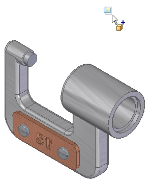
Choose Home tab→Components group→Insert Component command.
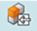
In the file list area on the Parts Library tab, drag the file named SpindleSub1.asm into the assembly window.
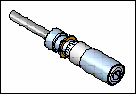
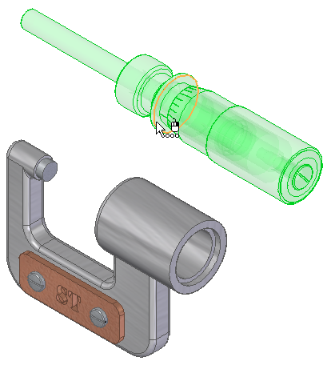
Position the cursor over the face shown in the top illustration, wait for the QuickPick cursor, then click to display QuickPick.
Use QuickPick to select the planar face on the far side of the plate, as shown in the illustration below.
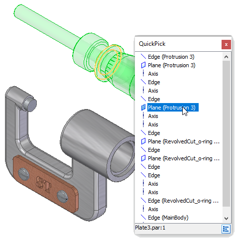
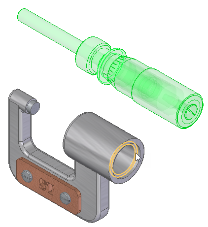
-
Select the planar face on the frame, as shown in the illustration.
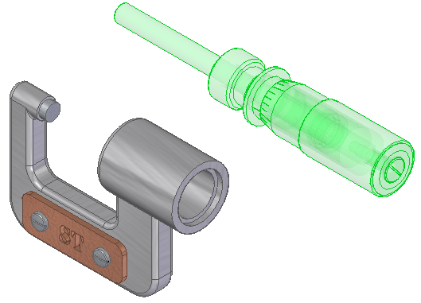
The mate relationship repositions the spindle subassembly in the assembly.
Because only one assembly relationship is applied, the position of the spindle subassembly might be different than the illustration.
Select the cylindrical axis on the plate.
Depending on the position of the cursor, QuickPick may be needed.
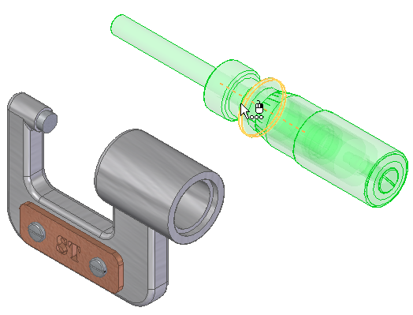
On the Assemble command bar, set the Lock Rotation option .
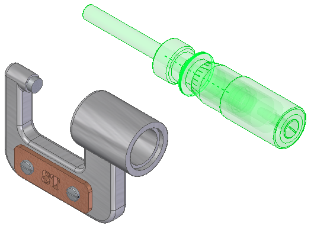
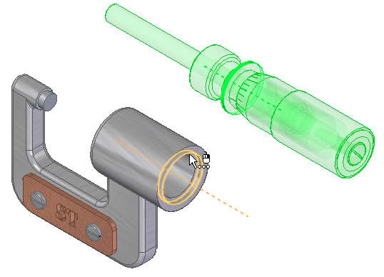
-
Select the cylindrical axis on the frame shown in the illustration.
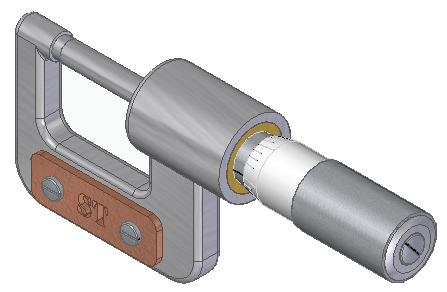
The spindle subassembly is now fully positioned in the assembly.
Choose Fit  to fit the contents of the view to the graphics window.
to fit the contents of the view to the graphics window.
On the Quick Access toolbar, choose Save  .
.
You are finished placing the spindle subassembly in the caliper assembly.